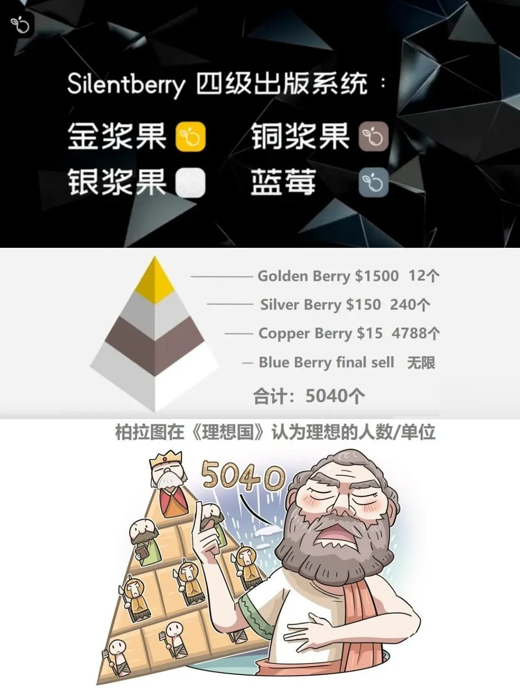

最近，SeeDAO 闪电网络共学小组留意到比特币链上将推出去中心化出版 NFT Book，创新发行著名历史学者秦晖教授新书.
SeeDAO 官方播客 SeeTalk 组织邀请出版平台 SilentBerry，胡翌霖教授和唐晗进行圆桌讨论，以下为 SeeTalk 小宇宙播客整理文稿：
秦晖：历史学者，清华大学人文学院历史系教授、博士生导师，现为香港中文大学教授。被誉为学者中的学者。著有《共同的底线》《秦汉史讲义》等
主持：唐晗 SeeDAO联合发起人，游吟诗人
嘉宾：董海平 SilentBerry发起人，Web3探索者
胡翌霖 華文DAO发起人，TianYu Art 艺术工作室发起人，前清华科学史系副教授
本期播客邀请胡教授和 SilentBerry 创始人董海平，讨论秦晖教授的新书在比特币上发布的事件。两位嘉宾认为，这一事件象征着 传统知识分子与 Web3 新兴科技的结合，彰显了自由主义理念与去中心化技术的契合。
D: 秦教授的自由主义理念，特别是对个人权利和民主的强调，与 SilentBerry 去中心化平台的理念高度契合。教授本人也对区块链技术及这种创新出版模式充满兴趣，促成了这次传统知识界与新兴科技的破冰合作，也让人们对出版业的未来充满期待。我相信秦晖老师这本书在 Web3 尤其撰刻在比特币上可以让更多的 Web2 用户积极参与起来。
自由主义、比特币与知识自由市场
H: 比特币的去中心化和自由市场机制与自由主义理念高度契合，这是一个很重要的事。
知识分子的自由主义理念，和我们科技领域也是所谓的自由主义，本来就是一致的，不应该分开。所以我会觉得，传统上，怎么你们还没有支持比特币呢？我说的支持不是叫大家购买，而是真正去了解、认识它。
当你真正理解到比特币的时候，你至少不会反对它，它是自由的产物，是一个自由市场的产物。所以我觉得这是理所当然的，这两者早就应该互相拥抱。
反过来说也是一样，你支持比特币，但你不支持知识的自由主义，你也是不对的，你只是支持赚钱。很多人是这样的，比特币之所以好，是因为它能帮我赚钱。你没有看到它最核心的理念，为什么要搞去中心化机制，为什么要搞自由货币？
如果根本上的理由说不通，你所有的财富效应都是空中楼阁，是泡沫。大家也会说，这是一个庞氏骗局，一窝蜂搞一波就完事了，那确实就会这样。所以只有我们坚持根上的东西，它不是今年、明年、去年刚刚出来的东西。某种意义上，它是整个现代启蒙运动的起点，甚至更早说的文艺复兴，都是起源于这种科技上的自由和知识上的解放，两者相结合。
启蒙运动是什么？首先在科技上就是出版业，出版和邮政，这些传播网络的运动。我们现在讨论的很多东西， 三、四百年前早就已经说过的事。比如我们讲到出版自由，就会搜到一本书叫做《论出版自由》，米尔顿在 1644 年写的一本书。
首先我们要追求真理。其次，真理不是说你资格老、有权力、权威、政治上有地位就掌握真理。真理是每个人都可以自由地去探寻的，它才是真理。如果你不能够保证一个米尔顿所说的思想的自由市场， 那你是假的真理。你的真理如果不是在一个自由市场中通过自由竞争最后胜出的，而是要用一种管制的方法，强制的手段来破坏市场自由，破坏自由的流通、自由的竞争，然后得到一个所谓的真理，那么这就是一个假的真理。你不是靠真理自身的力量来成为真理的。
这个洞见仍没有过时，还没有完成，我们就要反复地去做、反复地诉诸。
这个自由市场是广义的，商品可以在自由市场里竞争，货币可以在自由市场里竞争，而观点、思想、著作这些东西也应该在自由市场里头竞争。现在并没有发明一个新的东西，只是说我们又回到了 1644 年，回到启蒙运动甚至更早的时期我们的信念。
Web3、去中心化与出版业的未来
我们讨论了 Web3 概念及其对出版业的颠覆性影响。胡教授认为，Web3 旨在解决 Web2 的中心化弊端，构建更去中心化的舆论和公共空间，而区块链技术正是关键。出版自由更是 Web3 发展不可或缺的一环。 然而，我们也谈到了传统币圈的投机炒作，以及 Web3 如何跳脱单纯的资产炒作，探索更广泛的应用前景。
主持：刚刚胡老师点评了自由，今年其实有几个非常关键的词语，比特币，自由，包括我记得贝莱德的 CEO 他把比特币纳入到资产组合里面后，接受媒体采访，你要对比特币怎么样来进行估值，他答那你觉得自由到底值多少钱。这是一个很简短的话，但是给大家留下了一个非常深刻的印象，包括特朗普即将上台，将采取一系列的政策去推动接纳比特币，让其成为更加主流的货币。
还请教胡老师，在我看来现在可能有两股传统的人，一是传统的知识分子，二是传统的币圈人，虽然加密货币诞生也只有将近 16 年的时间，但已经形成了自己的圈子叫币圈，聊更多的是怎样去炒作加密货币，把一个资产的价格不断推高。那么除了一个传统的币圈，除了数字黄金，我们还可以用比特币来做什么呢？
H: 之前吹元宇宙，现在吹 Web3，不就是在说这个事吗？为什么叫 Web3？
虽然现在 Web3 的概念好像又有点过气，这个概念总是要不断地翻新，但它还是言之有物的。
什么是 Web3？就是对 Web2 不够满意，Web2 不行，还不够，还得再往上再迭代。迭代的是什么呢？是 Web。这就已经扩展了比特币以及整个加密行业。币圈不仅仅是币的问题，而且是Web 网络的问题。
币圈要革新的不仅仅是货币体系，更要革新互联网体系。而互联网体系就是当代的公共空间。在十六、十七世纪的公共空间是印刷书和杂志构成的这样一个文本空间，作为当时主要的公共空间以及信息获取的主要平台，社交和传播舆论的主要平台。
今天，我们的公共空间主要就是 Web, 是互联网。而这个网络，我们对 web2 的现状是有不满的，是觉得它不够的。一个很不够的地方，我们吹 web3，特别是说 web3 需要区块链。为什么 web3 需要区块链？区块链的唯一作用就是去中心化。所以Web3 的人就应该已经默认了或者说已经共识了一点，是 web2 不够去中心化，而我们需要一个更加去中心化的舆论空间、公共空间或者说思想市场，这是一个根上的东西，是一个根本性的东西。
反之，你就别说 Web3 了，都在说我们要追求 Web2 的玩法，要赚大钱。那你 3的迭代在哪里？革新性在里？革新性一定是我们的公共空间要进一步的变化。往什么方向变化？就是区块链。区块链代表着什么方向呢？是去中心化。
我们现在把出版和币圈结合，它的目的还是在 Web3 概念里头说到的，我们要更加开放自由的公共空间。
SilentBerry 平台的创新出版模式
董老师介绍了 SilentBerry 平台的创新之处：将书籍版权与投资巧妙结合，让读者像购买股票一样，投资并分享书籍的收益。这不仅降低了作者的出版门槛，更让读者成为书籍成功的一部分，共享其丰厚回报。平台还整合了全球打印网络，让读者随时随地都能方便地打印图书，进一步降低了出版成本。
D: 我们的销售模式上设计了四级NFT权益。第一级读者相当于投资人可以购买到作者的版权收益权，相当于他是支持者，大家可以把一本书当成一个 IPO 进行投资。有第一轮的收入，作者已获得他传统版税的利润。另外，我们又把印刷这样的一个网络结合，一本书就可以在全球各地自由地打印和出版，大大减轻了作者负担，使得能够让他低门槛地出版图书。

这样可以让读者、粉丝比较早期地参与到。如果以书籍的发售为一个项目的话，他可以以一个股东的身份，以一个愿意来承担这个项目的风险的身份，参与到这个项目中间去。如果我是一个创作者的铁杆粉丝，可能就特别想要他的版权；也由于我的偏好，可能会知道哪一部分人会特别喜欢这个东西，那么我会去传播它；我可能也会因为自己早期的参与而获益。这样的话，读者、粉丝是可以和作者一起来在一个 IP 的诞生中一起去建设、获益。也改变了创作者自己的身份，还有包括读者自己的身份。
播客中，董老师还详细分享传统出版行业的工作流程与成本构成，书号、版号的申请，如当前自费出书可能要准备10万元左右。而SilentBerry 是一家位于北欧的去中心化出版平台，版号与出版打印又是怎么取得与构成？
胡教授还谈到，此次创新出版是在区块链行业最高的那个山峰上在振臂一呼。比特币是出版链行业最稳健的那一块可以铭刻人类智慧的石碑。
整理：木南、文倩